Aggregating predictions from an SIRS model
SIRS-vignette.RmdThis vignette implements the first case study from (Howerton et al., n.d.). We simulate a multi-model effort to evaluate the performance of various aggregation methods when applied to distributions of public health outcomes.
To start, we load a few packages.
# for aggregation
library(CombineDistributions)
# for scoring
library(pracma)
# for data manipulation
library(dplyr)
library(data.table)
# for plotting
library(ggplot2)
library(scales)
library(cowplot)
library(tidyr)
# for rmd
library(knitr)
# set seed so we can replicate results
set.seed(20)
# test if a directory named "figures" exists locally, if not create it
if (!dir.exists("../figures")){
dir.create("../figures")
}
fig_path <- "../figures/"SIRS Model
We use an SIRS (susceptible-infected-recovered-susceptible) model implemented stochastically with the chain-binomial framework (Bailey 1957). All individuals in the population are classified into one of the three compartments (S,I, or R), and we define how many individuals transition between these states at each time step:
| Transition | Number of individuals transitioning |
|---|---|
| infection | \(\delta_{S \rightarrow I}(t), \text{drawn from}D_{S \rightarrow I}(t) \sim Binomial(S(t), 1 - e^{-\beta I(t)/N})\) |
| recovery | \(\delta_{I \rightarrow R}(t), \text{drawn from}D_{I \rightarrow R}(t) \sim Binomial(S(t), 1 - e^{-\gamma})\) |
| waning | \(\delta_{R \rightarrow S}(t), \text{drawn from}D_{R \rightarrow S}(t) \sim Binomial(S(t), 1 - e^{-\rho})\) |
We update the number of individuals in each compartment accordingly:
\[
\begin{aligned}
S(t+1) &= S(t) - \delta_{S \rightarrow I}(t) + \delta_{R \rightarrow
S}(t) \\
I(t+1) &= I(t) + \delta_{S \rightarrow I}(t) - \delta_{I \rightarrow
R}(t)\\
R(t+1) &= R(t) + \delta_{I \rightarrow R}(t) - \delta_{R \rightarrow
S}(t)\\
\end{aligned}
\] We implement this process with two
functions,run_cb_sir() and cb_sir(), and
define a third function to collect the information we are interested in
from each simulation, return_obj().
# implement chain binomial over time
run_cb_sir = function(n_times, sims, IC, beta, gamma, rho){
class = c("S", "I", "R", "C")
ret = array(integer(),c(sims,length(class),n_times),dimnames = list(NULL, class, NULL))
# ret dimensions - 1: sims, 2: classes, 3: time
ret[,,1] = matrix(rep(IC,sims), nrow = sims, byrow = TRUE )
# repeate cb_sir() over time
for(ts in 2:n_times){
ret[,,ts] <- cb_sir(sims,delta.t =1,
S = ret[,"S",ts-1],
I = ret[,"I",ts-1],
R = ret[,"R",ts-1],
C = ret[,"C",ts-1],
beta=beta,gamma=gamma,rho=rho)
}
# calculate metrics of interest based on simulations
return(list(timeseries = ret,
metrics = return_obj(ret)))
}
# implement chain binomial for single time step
cb_sir <- function(S, I, R, C, beta, gamma, rho,
sims, delta.t){
N <- S+I+R
# draw number of individuals transitioning between states
dN_SI <- rbinom(n=sims,size=S,prob=1-exp(-beta*I/N*delta.t))
dN_IR <- rbinom(n=sims,size=I,prob=1-exp(-gamma*delta.t))
dN_RS <- rbinom(n=sims, size=R, prob=1-exp(-rho*delta.t))
# update states
S <- S - dN_SI + dN_RS
I <- I + dN_SI - dN_IR
R <- R + dN_IR - dN_RS
C <- C + dN_SI
return(cbind(S, I, R, C))
}
# calculate metrics of interest (cumulative & peak cases)
return_obj = function(out){
# select only C compartment (cumulative cases over time)
out <- reshape2::melt(out[,"C",], c("sim", "time"))
setDT(out)
# cumulative cases = # cases in C at final time
cum_cases <- out[time == max(time),]
cum_cases[,time :=NULL]
setnames(cum_cases, "value", "cum_cases")
# peak cases = max(diff between C at t and t-1)
peak_cases <- out[, .(value = c(0,diff(value))), by = .(sim)]
peak_cases <- peak_cases[, .(peak_cases = max(value)), by = .(sim)]
return(left_join(peak_cases, cum_cases))
}Defining “multiple models”
We vary the parameters to represent four distinct models (\(A\), \(B\), \(C\), and \(D\)) with varying assumptions about the transmission process. There are two types of uncertainty that these models encapsulate:
- parametric uncertainty about the transmission rate, \(\beta\). We assume that all four models let \(\beta \sim N(\mu_\beta, 0.2)\) and that \(\mu_\beta\) varies across models, with \(\mu_{\beta,A} = 1.2\), \(\mu_{\beta,B} = 1.4\), \(\mu_{\beta,C} = 1.6\), and \(\mu_{\beta,D} = 1.8\).
-
structural uncertainty about the waning of
immunity, where models either assume transmission follows and SIR model
(no waning of immunity, i.e., \(rho =
0\)) or that transmission follows and SIRS model (immunity wanes,
we let \(rho = 1/26\)). We assume there
are three ways in which structural uncertainty can be represented in our
multi-model ensemble:
- structural uncertainty is not represented: all models assume no waning, i.e., \(\rho_{A,B,C,D} = 0\)
- structural uncertainty is represented between models: two models assume no waning and two assume waning, i.e., \(\rho_{A,C} = 0\) and \(\rho_{B,D} = 1/26\)
- structural uncertainty is represented within models: all models incorporate both waning possibilities into their projections with equal probability, i.e., \(\rho_{A,B,C,D} = [1/26,0]\)
To implement these cases, we create a data.frame of
individual model parameter sets to consider.
# define the number of simulations per model
n_samples <- 10000
# define mean and sd for transmission rate (beta) for each model
m1_beta <- 1.2; m2_beta <- 1.4; m3_beta <- 1.6; m4_beta <- 1.8
sig_beta <- 0.2
# define unique beta for each simulation
beta <- rnorm(n_samples*4,
c(rep(m1_beta, n_samples),
rep(m2_beta, n_samples),
rep(m3_beta, n_samples),
rep(m4_beta, n_samples)),
sd = sig_beta)
# verify all transmission rates are positive
which(beta <= 0)
#> integer(0)
# define unique recovery rate (gamma) for each simulation
mu_recov_time <- 1; sig_recov_time <- 0.1
recov_time <- rnorm(n_samples*4, mu_recov_time, sig_recov_time)
# verify all recovery times are positive
which(recov_time <= 0)
#> integer(0)
# define unique waning rate (rho) for each simulation and structural uncertainty scenario
wane_time_unlikely <- 0; wane_time_likely <- 26
# structural uncertainty scenario 1: none
# no models consider structural uncertainty
rho_none <- rep(wane_time_unlikely, n_samples*4)
# structural uncertainty scenario 2: between models
rho_btn <- c(rep(wane_time_unlikely, n_samples), # model A: waning unlikely
rep(wane_time_likely, n_samples), # model B: waning likely
rep(wane_time_unlikely, n_samples), # model C: waning unlikely
rep(wane_time_likely, n_samples)) # model D: waning likely
# structural uncertainty scenario 3: within models
# all models assume wanings/no waning with equal probability
rho_win <- rep(c(rep(wane_time_unlikely, n_samples/2), rep(wane_time_likely, n_samples/2)),4)
# create data.frame of parameters for each uncertainty scenario
# scenario 1: none
none <- data.frame(beta = beta, recov_time = recov_time,rho = rho_none,
model = sort(rep(LETTERS[1:4], n_samples)),
struc_uncert = "none")
# scenario 2: between
btn <- data.frame(beta = beta, recov_time = recov_time, rho = rho_btn,
model = sort(rep(LETTERS[1:4], n_samples)),
struc_uncert = "btn")
# scenario 3: within
win <- data.frame(beta = beta, recov_time = recov_time, rho = rho_win,
model = sort(rep(LETTERS[1:4], n_samples)),
struc_uncert = "win")
# combine all parameters into one data.frame
all_params <- rbind(none, btn, win)
# correct any negative parameters and convert to rate
all_params$gamma = with(all_params, ifelse(recov_time == 0, 0, 1/recov_time))
all_params <- all_params %>% select(-recov_time)
all_params$rho = with(all_params, ifelse(rho == 0, 0, 1/rho))
# add simulation number
all_params$sim = 1:nrow(all_params)Here are the distributions of parameters for each model:
Individual model projections
We simulate the model using all the parameter sets we’ve defined. To do so, we need to define the length of the simulation (52 weeks), population size (1000 individuals), and initial conditions (1.5% infected, all else susceptible).
# other model parameters
T <- 52 # length of simulation (in weeks)
N <- 1000 # number of individuals in the population
init = N*c(S = 0.985, I = 0.015, R = 0, C = 0) # initial conditions
# run the chain binomial model
out <- run_cb_sir(T, nrow(all_params), init , all_params$beta, all_params$gamma, all_params$rho)
# reshape out metrics
out$metrics <- out$metrics %>% left_join(all_params)
# reshape out time series
out$timeseries <- as.data.frame(out$timeseries[,"I",]) %>%
mutate(id = 1:n()) %>%
reshape2::melt("id") %>%
rename(time = variable) %>%
mutate(time = as.integer(gsub("V","",time)))We plot the resulting simulations, which show outbreaks that either fade out or have a second wave depending on assumptions about waning immunity (green: no waning, orange: waning).
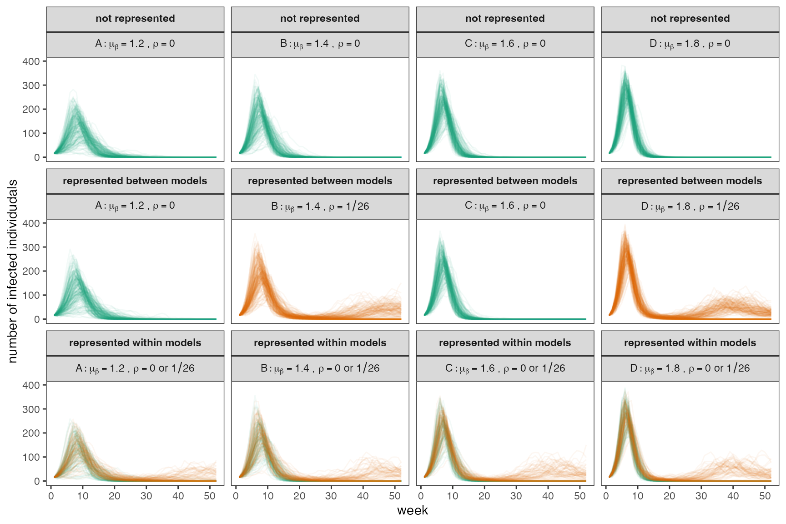
Some simulations fade out early in the first wave, let’s identify in how many simulations this occurs.
inital_fadeout_thresh <- 100
kable(out$metrics %>%
group_by(model, struc_uncert) %>%
#filter() %>%
summarise(n = length(which((cum_cases < inital_fadeout_thresh)))))| model | struc_uncert | n |
|---|---|---|
| A | btn | 42 |
| A | none | 40 |
| A | win | 34 |
| B | btn | 2 |
| B | none | 4 |
| B | win | 2 |
| C | btn | 0 |
| C | none | 0 |
| C | win | 0 |
| D | btn | 0 |
| D | none | 0 |
| D | win | 0 |
Then, for each time series we track cumulative and peak cases. We summarize the output into distributions (both pdfs and cdfs) for each metric. For this vignette, we show results only for cumulative cases, though all analyses are performed for peak cases as well.
# convert to long format
out$metrics <- reshape2::melt(out$metrics, c("sim", "beta", "gamma", "rho", "model", "struc_uncert"))
# CDFs
q <- 1:999/1000
cdfs <- setDT(out$metrics)[,.(value = quantile(value, q), quantile = q),
by = .(model, struc_uncert, variable)]
# PDFs
pdfs <- setDT(out$metrics)[,.(x = density(value, adjust = 2)$x, y = density(value, adjust = 2)$y),
by = .(model, struc_uncert, variable)]We plot the distribution of outcomes for individual model projections across the three uncertainty scenarios.
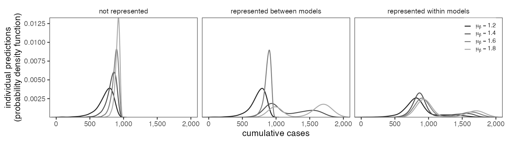
Aggregating outcomes
Next, we aggregate the outcomes of our multi-model simulation using both LOP and Vincent averages.
# aggregate cdfs
agg_cdfs <- rbind(
aggregate_cdfs(cdfs, id_var = "model",
group_by = c("struc_uncert", "variable"),
method = "LOP",
ret_quantiles = q)[,method:="LOP"],
aggregate_cdfs(cdfs, id_var = "model",
group_by = c("struc_uncert", "variable"),
method = "vincent",
ret_quantiles = q)[,method := "Vincent"]
)
# to get aggregate pdfs, sample from std. uniform and draw from distributions
agg_pdfs <- agg_cdfs[, .(samps = approx(quantile, value, runif(100000))$y),
by = .(struc_uncert, variable, method)] %>%
.[!is.na(samps)] %>%
.[, .(x = density(samps, adjust = 1.5)$x, y = density(samps, adjust = 1.5)$y),
by = .(struc_uncert, variable, method)]We plot the resulting aggregate distributions.
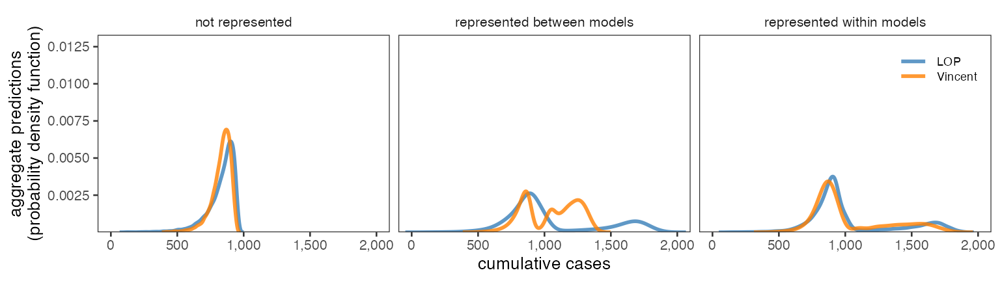
Evaluating performance
Next we test how well each of these aggregation methods perform, given a range of assumptions about the future. Our assumptions about the future transmission rate and waning of immunity are
| Truth case | True mean transmission rate | True waning of immunity |
|---|---|---|
| case 1 | model A assumption is correct, \(\mu_\beta = 1.2\) | no waning, SIR |
| case 2 | model B assumption is correct, \(\mu_\beta = 1.4\) | no waning, SIR |
| case 3 | model C assumption is correct, \(\mu_\beta = 1.6\) | no waning, SIR |
| case 4 | model D assumption is correct, \(\mu_\beta = 1.8\) | no waning, SIR |
| case 5 | truth is mean of model assumptions, \(\mu_\beta = 1.5\) | no waning, SIR |
| case 6 | model A assumption is correct, \(\mu_\beta = 1.2\) | waning, SIRS |
| case 7 | model B assumption is correct, \(\mu_\beta = 1.4\) | waning, SIRS |
| case 8 | model C assumption is correct, \(\mu_\beta = 1.6\) | waning, SIRS |
| case 9 | model D assumption is correct, \(\mu_\beta = 1.8\) | waning, SIRS |
| case 10 | truth is mean of model assumptions, \(\mu_\beta = 1.5\) | waning, SIRS |
We define a data.frame with these true parameter
values.
# define the number of synthetic future observations
n_obs <- 1000
# define true transmission rate
obs_beta <- c(rnorm(n_obs, m1_beta, sig_beta),
rnorm(n_obs, m2_beta, sig_beta),
rnorm(n_obs, m3_beta, sig_beta),
rnorm(n_obs, m4_beta, sig_beta),
rnorm(n_obs, mean(c(m1_beta, m2_beta, m3_beta, m4_beta)),sig_beta))
# define true recovery rate
obs_recov_time <- rnorm(n_obs*5, mu_recov_time, sig_recov_time)
# define true waning
obs_params <- rbind(data.frame(beta = obs_beta, obs_recov_time = obs_recov_time, rho = ifelse(wane_time_likely == 0, 0, 1/wane_time_likely),
true_beta = sort(rep(c(paste0("m", 1:4), "mean"), n_obs)),
true_rho = "Y"),
data.frame(beta = obs_beta, obs_recov_time = 1/obs_recov_time, rho = ifelse(wane_time_unlikely == 0, 0, 1/wane_time_unlikely),
true_beta = sort(rep(c(paste0("m", 1:4), "mean"), n_obs)),
true_rho = "N"))
obs_params$gamma = with(obs_params, ifelse(obs_recov_time == 0, 0, 1/obs_recov_time))
obs_params$sim = 1:nrow(obs_params)
# simulate observations given these true params
obs <- run_cb_sir(T, nrow(obs_params), init, obs_params$beta, obs_params$gamma, obs_params$rho)
obs <- obs$metrics
obs <- obs %>% left_join(obs_params) %>% select(-obs_recov_time)
obs <- reshape2::melt(obs, c("sim", "beta", "gamma", "rho", "true_beta", "true_rho"))Doing so gives the following distribution of observations.
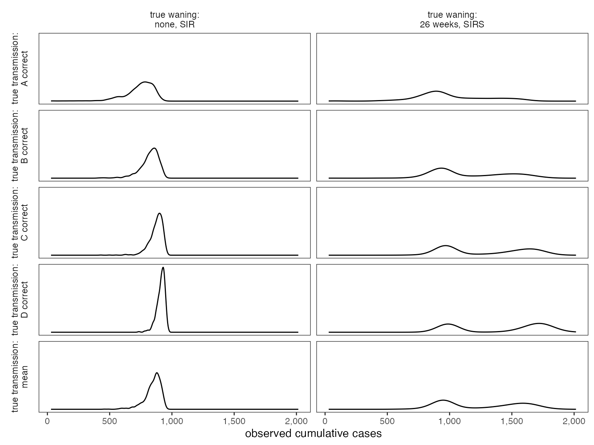
We use the continuous rank probability score (CRPS) (Matheson and Winkler 1976) to assess performance of the aggregate distributions against these synthetic future observations.
# define function to implement CRPS
# assume piecewise linear cdf, jumps to 0/1 after last defined quantile
CRPS <- function(q,v,o){
# add o into v to calculate area under curve
v <- sort(c(v, o))
# find integral cutoff where v = o
vl <- max(which(v == o))
# assume values outside the define set of values and quantiles are 0 or 1 (jump)
if(vl == 1){
q <- c(0,q)
}
else if (vl == length(v)){
q <- c(q,1)
}
else{
# add q_o into q to calculate area under curve
q <- c(q[1:(vl-1)],NA,q[(vl):length(q)])
# interpolate quantile for obs
q_o <- q[vl-1] + ((q[vl+1] - q[vl-1])/(v[vl+1] - v[vl-1]))*(o - v[vl-1])
# add q_o into q to calculate area under curve
q[vl] <- q_o
}
# calculate area of each trapezoid using CRPS formula for each subset
areas_1 <- trapz(v[1:vl], q[1:vl]^2)
areas_2 <- trapz(v[vl:length(v)], (q[vl:length(v)]-1)^2)
# return sum of areas
return(sum(c(areas_1, areas_2)))
}
# implement CRPS
scores <- obs %>%
select(variable, value) %>%
unique() %>%
rename(obs = value) %>%
mutate(obs_num = 1:length(obs)) %>%
dplyr::left_join(agg_cdfs)
# get CRPS score
scores <- setDT(scores)[, .(CRPS = CRPS(quantile,value,obs)), #
by=.(method, variable, struc_uncert, obs_num, obs)]The CRPS results can be plotted for the LOP and Vincent aggregates across three structural uncertainty scenarios.
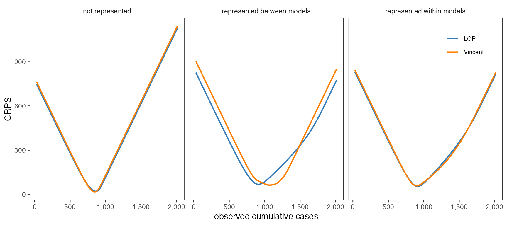
And we can show when LOP and Vincent perform better by plotting the difference between CRPS for each.
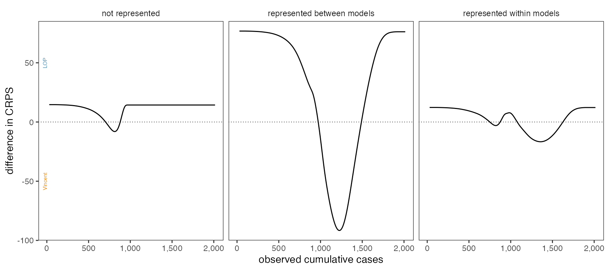
Then, if we combine these score differences with the frequency at which each observation occurs in the synthetic observations, we can generate a distribution of relative performance. We summarize that distribution with a few intervals.
scores_all <- obs %>%
left_join(scores, by = c("variable", "value" = "obs")) %>%
reshape2::dcast(variable + true_beta + true_rho + struc_uncert +
value + sim ~ method, value.var = "CRPS") %>%
# calculate difference to see which method has better CRPS
mutate(diff = Vincent - LOP) %>%
# summarize distribution of differences
group_by(variable, true_beta, true_rho, struc_uncert) %>%
mutate(lower = quantile(diff, 0.025),
lower_25 = quantile(diff, 0.25),
med = median(diff),
upper_75 = quantile(diff, 0.75),
upper = quantile(diff, 0.975),
# for plotting
plot_y = factor(true_beta)) %>%
mutate(plot_y = as.numeric(plot_y))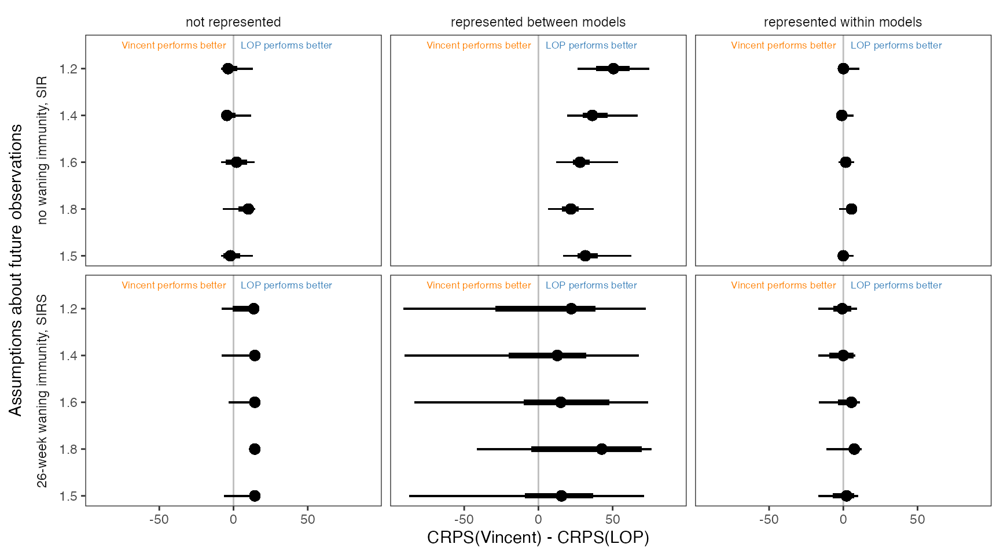
Aggregating with an outlier
Lastly, we consider the effects of an outlier on the resulting aggregate distributions. We run another set of model simulations with \(\mu_\beta = 2.4\).
# define unique beta for each simulation
outlier_mu_beta <- 2.4
outlier_beta <- rnorm(n_samples,
outlier_mu_beta,
sd = sig_beta
)
# verify all transmission rates are positive
which(beta <= 0)
#> integer(0)
# define unique recovery rate (gamma) for each simulation
outlier_recov_time <- rnorm(n_samples, mu_recov_time, sig_recov_time)
# verify all recovery times are positive
which(recov_time <= 0)
#> integer(0)
# create data.frame of parameters for each uncertainty scenario
# scenario 1: none
none <- data.frame(beta = outlier_beta, recov_time = outlier_recov_time,
rho = wane_time_unlikely,
model = "E",
struc_uncert = "none")
# scenario 2: between
btn <- data.frame(beta = outlier_beta, recov_time = outlier_recov_time,
rho = wane_time_unlikely,
model = "E",
struc_uncert = "btn")
# scenario 3: within
win <- data.frame(beta = outlier_beta, recov_time = outlier_recov_time,
rho = c(rep(wane_time_unlikely, n_samples/2), rep(wane_time_likely, n_samples/2)),
model = "E",
struc_uncert = "win")
# combine all parameters into one data.frame
outlier_params <- rbind(none, btn, win)
# correct any negative parameters and convert to rate
outlier_params$gamma = with(outlier_params, ifelse(recov_time == 0, 0, 1/recov_time))
outlier_params <- outlier_params %>% select(-recov_time)
outlier_params$rho = with(outlier_params, ifelse(rho == 0, 0, 1/rho))
# add simulation number
outlier_params$sim = max(all_params$sim) + 1:nrow(outlier_params)
# run the chain binomial model
outlier_out <- run_cb_sir(T, nrow(outlier_params), init , outlier_params$beta, outlier_params$gamma, outlier_params$rho)
# reshape outlier_out metrics
outlier_out$metrics <- outlier_out$metrics %>%
mutate(sim = sim + max(all_params$sim)) %>%
left_join(outlier_params)
# reshape outlier_out time series
outlier_out$timeseries <- as.data.frame(outlier_out$timeseries[,"I",]) %>%
mutate(id = 1:n() + max(all_params$sim)) %>%
reshape2::melt("id") %>%
rename(time = variable) %>%
mutate(time = as.integer(gsub("V","",time)))We approximate the individual distributions, including the outlier, and plot the distribution of outcomes for individual model projections across the three uncertainty scenarios.
# convert to long format
outlier_out$metrics <- reshape2::melt(outlier_out$metrics, c("sim", "beta", "gamma", "rho", "model", "struc_uncert"))
# CDFs
q <- 1:999/1000
outlier_cdfs <- setDT(outlier_out$metrics)[,.(value = quantile(value, q), quantile = q),
by = .(model, struc_uncert, variable)]
# PDFs
outlier_pdfs <- setDT(outlier_out$metrics)[,.(x = density(value, adjust = 2)$x, y = density(value, adjust = 2)$y),
by = .(model, struc_uncert, variable)]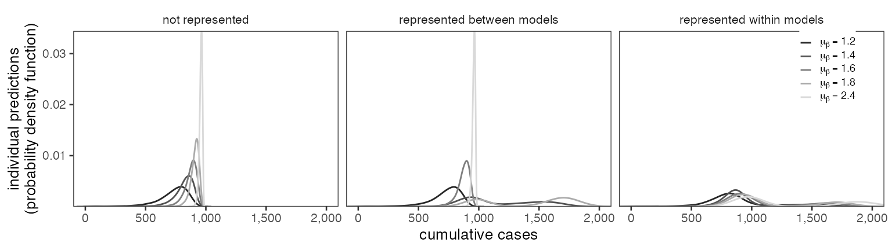
Next, we aggregate the predictions with and without trimming (note we only consider trimming of two values, lowest and highest, because there are only five models).
# aggregate cdfs
agg_cdfs_outlier <- rbind(
aggregate_cdfs(bind_rows(cdfs, outlier_cdfs), id_var = "model",
group_by = c("struc_uncert", "variable"),
method = "LOP",
ret_quantiles = q) %>%
.[, ":=" (method="LOP",
ntrim = 0)],
aggregate_cdfs(bind_rows(cdfs, outlier_cdfs), id_var = "model",
group_by = c("struc_uncert", "variable"),
method = "vincent",
ret_quantiles = q) %>%
.[, ":=" (method="Vincent",
ntrim = 0)],
# add trimmed aggregates
aggregate_cdfs(bind_rows(cdfs, outlier_cdfs), id_var = "model",
group_by = c("struc_uncert", "variable"),
method = "LOP",
ret_quantiles = q,
weighting_scheme = "CDF_exterior",
n_trim = 2) %>%
.[, ":=" (method="LOP",
ntrim = 2)],
aggregate_cdfs(bind_rows(cdfs, outlier_cdfs), id_var = "model",
group_by = c("struc_uncert", "variable"),
method = "vincent",
ret_quantiles = q,
weighting_scheme = "CDF_exterior",
n_trim = 2) %>%
.[, ":=" (method="Vincent",
ntrim = 2)]
)
# to get aggregate pdfs, sample from std. uniform and draw from distributions
agg_pdfs_outlier <- agg_cdfs_outlier[, .(samps = approx(quantile, value, runif(100000))$y),
by = .(struc_uncert, variable, method, ntrim)] %>%
.[!is.na(samps)] %>%
.[, .(x = density(samps, adjust = 1.5)$x, y = density(samps, adjust = 1.5)$y),
by = .(struc_uncert, variable, method, ntrim)]We plot the resulting aggregate distributions.
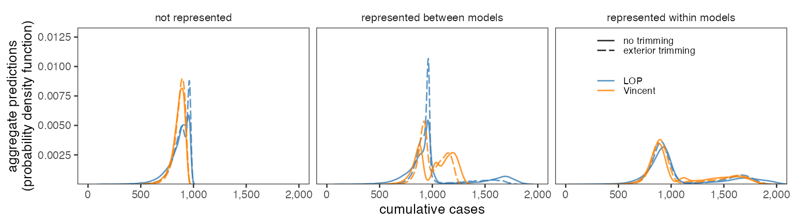
Let’s see how these aggregates perform against the alternate truth scenarios.
# implement CRPS
scores_outlier <- obs %>%
select(variable, value) %>%
unique() %>%
rename(obs = value) %>%
mutate(obs_num = 1:length(obs)) %>%
dplyr::left_join(agg_cdfs_outlier)
# get CRPS score
scores_outlier <- setDT(scores_outlier)[, .(CRPS = CRPS(quantile,value,obs)), #
by=.(method, ntrim, variable, struc_uncert, obs_num, obs)]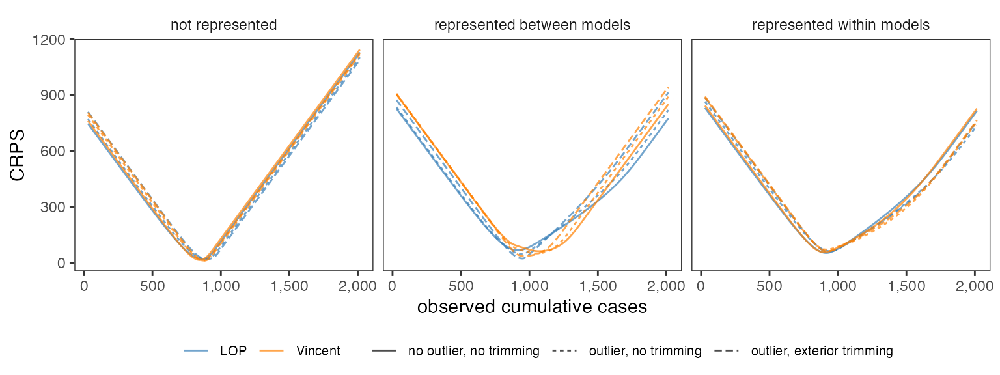
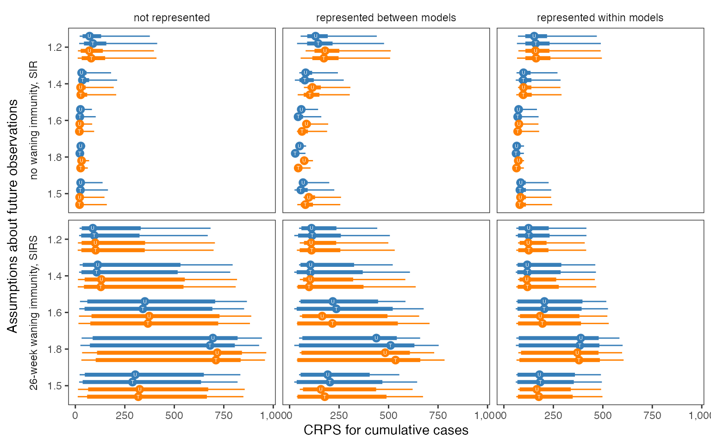
Lastly, we plot how often is each aggregate distribution the best performer.
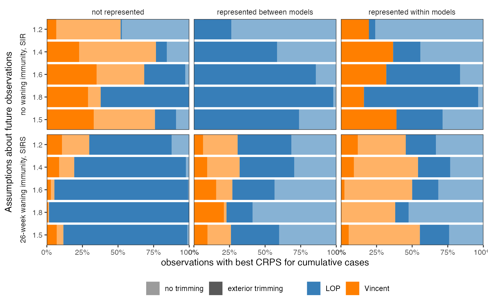